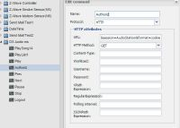
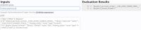

Hi.
I use: Synology DS3615; OpenRemote 2.1.1 + AeonLabs Z-Wave Stick 2.
I launched the DS Audio + USB DAC + amplifier for background music.
Please help me with command for the DS Audio.
Here is a link to the API: https://github.com/yannickcr/node-synology/wiki/synology-api
On the command: http://forum.synology.com/enu/viewtopic.php?f=63&t=20487#p354780
I having dealt with the command of the browser, in the Web browser (GC) its work.
Auth = "http://192.168.1.7:5000/webapi/auth.cgi?api=SYNO.API.Auth&version=2&method=login&account=admin&passwd=12345&session=AudioStation&format=cookie" response = "{"data":{"sid":"rr1Mm1MR9YYJk13A0LTN007533"},"succ ess":true}" Logout = "http://192.168.1.7:5000/webapi/auth.cgi?api=SYNO.API.Auth&version=1&method=logout&session=AudioStation" response = "{"success":true}" Play = "http://192.168.1.7:5000/webapi/AudioStation/remote_player.cgi?api=SYNO.AudioStation.RemotePlayer&method=control&action=play&id=__SYNO_USB_PLAYER__&version=2" response = "{"success":true}" Start song = "http://192.168.1.7:5000/webapi/AudioStation/remote_player.cgi?api=SYNO.AudioStation.RemotePlayer&method=control&action=play&id=__SYNO_USB_PLAYER__&value=music_14&version=2" response = "{"success":true}" Start PlayList = "http://192.168.1.7:5000/webapi/AudioStation/remote_player.cgi?api=SYNO.AudioStation.RemotePlayer&method=control&action=play&id=__SYNO_USB_PLAYER__&value=playlist_shared_normal/1&version=2" response = "{"success":true}"
And other:
Pause = "http://192.168.1.7:5000/webapi/AudioStation/remote_player.cgi?api=SYNO.AudioStation.RemotePlayer&method=control&action=pause&id=__SYNO_USB_PLAYER__&version=2" Stop = "http://192.168.1.7:5000/webapi/AudioStation/remote_player.cgi?api=SYNO.AudioStation.RemotePlayer&method=control&action=stop&id=__SYNO_USB_PLAYER__&version=2" Next = "http://192.168.1.7:5000/webapi/AudioStation/remote_player.cgi?api=SYNO.AudioStation.RemotePlayer&method=control&action=next&id=__SYNO_USB_PLAYER__&version=2" Prev = "http://192.168.1.7:5000/webapi/AudioStation/remote_player.cgi?api=SYNO.AudioStation.RemotePlayer&method=control&action=prev&id=__SYNO_USB_PLAYER__&version=2"
Will look like command authorization, and subsequent commands in the OpenRemote?
I tried to send commands from the controller URC MRX-10 (Universal Remote Control equipment ), but work only authorization and logout. The rest of the commands return errors:
Authorization: GET\x20/webapi/auth.cgi?api=SYNO.API.Auth&version=2&method=login& account=admin&passwd=12345&session=AudioStation&fo rmat=cookie\x0D\x0A\x0D\x0A
{"data":{"sid":"GCkNbekmi6osY13A0LTN007533"},"succ ess":true}\x0A
and
Authorization <sid>: GET\x20/webapi/auth.cgi?api=SYNO.API.Auth&version=2&method=login& account=admin&passwd=12345&session=AudioStation&fo rmat=sid\x0D\x0A\x0D\x0A
"{"data":{"sid":"HABrw9gEFZz6213A0LTN007533"},"succ ess":true}\x0A"
Play PlayList: GET\x20/webapi/AudioStation/remote_player.cgi?api=SYNO.AudioStation.RemotePlay er&method=control&action=play&id=__SYNO_USB_PLAYER __&value=playlist_shared_normal/1&version=2\x0D\x0A\x0D\x0A
"{"error":{"code":105},"success":false}\x0A"
105=The logged in session does not have permission
POST\x20/webapi/AudioStation/remote_player.cgi?api=SYNO.AudioStation.RemotePlay er&method=control&action=play&id=__SYNO_USB_PLAYER __&value=playlist_shared_normal/1&version=2\x0D\x0A\x0D\x0A
"{"error":{"code":101},"success":false}\x0A"
101=Invalid parameter
Logout: GET\x20/webapi/auth.cgi?api=SYNO.API.Auth&version=1&method=logout &session=AudioStation\x0D\x0A\x0D\x0A
"{"success":true}\x0A"
Ie for normal operation commands after login, you need to send an authorization with of each command. How to do it?
P.S. I tried out from OpenRemote, not working.
Need adjustment commands. 
|
UP Example to enable cam 1 and start recording and disable cam 2 at same time: cameracmd -login -camera=1 -enable -recordon -camera=2 -disable -logout -verbose -clean For list of cmd : cameracmd -help #!/bin/sh ID="$RANDOM" VER="1" PASS="mypass" SERVEUR="192.168.0.100:5000" while [ $# -gt 0 ] do key="$1" case $key in -l|-login) echo "Login">/tmp/camres-${ID}.txt VER="1" wget -q --keep-session-cookies --save-cookies /tmp/syno-cookies-${ID}.txt -O- "http://${SERVEUR}/webapi/auth.cgi?api=SYNO.API.Auth&method=Login&version=${VER}&account=admin&passwd=${PASS}">>/tmp/camres-${ID}.txt ;; -logout) echo "Logout">>/tmp/camres-${ID}.txt VER="1" wget -q --load-cookies /tmp/syno-cookies-${ID}.txt -O- "http://${SERVEUR}/webapi/auth.cgi?api=SYNO.API.Auth&method=Logout&version=${VER}">>/tmp/camres-${ID}.txt rm /tmp/syno-cookies-${ID}.txt ;; -clean) rm /tmp/camres-${ID}.txt ;; -v|-verbose) cat /tmp/camres-${ID}.txt ;; -i=*|-id=*) ID="${1#*=}" ;; -p|-printid) echo "${ID}" ;; -c=*|-camera=*) CAM="${1#*=}" ;; -e|-enable) echo "Enable">>/tmp/camres-${ID}.txt VER="3" wget -q --load-cookies /tmp/syno-cookies-${ID}.txt -O- "http://${SERVEUR}/webapi/entry.cgi?api=SYNO.SurveillanceStation.Camera&method=Enable&version=${VER}&cameraIds=${CAM}">>/tmp/camres-${ID}.txt echo "">>/tmp/camres-${ID}.txt ;; -d|-disable) echo "Disable">>/tmp/camres-${ID}.txt VER="3" wget -q --load-cookies /tmp/syno-cookies-${ID}.txt -O- "http://${SERVEUR}/webapi/entry.cgi?api=SYNO.SurveillanceStation.Camera&method=Disable&version=${VER}&cameraIds=${CAM}">>/tmp/camres-${ID}.txt echo "">>/tmp/camres-${ID}.txt ;; -notify=*) EID="${1#*=}" echo "Notify">>/tmp/camres-${ID}.txt VER="1" wget -q --load-cookies /tmp/syno-cookies-${ID}.txt -O- "http://${SERVEUR}/webapi/entry.cgi?api=SYNO.SurveillanceStation.Notification.Filter&method=Set&5=${EID}&version=${VER}">>/tmp/camres-${ID}.txt echo "">>/tmp/camres-${ID}.txt ;; -event=*) EID="${1#*=}" echo "Event">>/tmp/camres-${ID}.txt VER="1" wget -q --load-cookies /tmp/syno-cookies-${ID}.txt -O- "http://${SERVEUR}/webapi/entry.cgi?api=SYNO.SurveillanceStation.ExternalEvent&method=Trigger&eventId=${EID}&version=${VER}">>/tmp/camres-${ID}.txt echo "">>/tmp/camres-${ID}.txt ;; -preset=*) PID="${1#*=}" echo "Preset">>/tmp/camres-${ID}.txt VER="1" wget -q --load-cookies /tmp/syno-cookies-${ID}.txt -O- "http://${SERVEUR}/webman/3rdparty/SurveillanceStation/cgi/cameraPreset.cgi?action=presetExecute&camId=${CAM}&position=${PID}&speed=3&isPreview=1">>/tmp/camres-${ID}.txt echo "">>/tmp/camres-${ID}.txt ;; -recordon) echo "recordon">>/tmp/camres-${ID}.txt VER="1" wget -q --load-cookies /tmp/syno-cookies-${ID}.txt -O- "http://${SERVEUR}/webapi/entry.cgi?api=SYNO.SurveillanceStation.ExternalRecording&method=Record&action=start&version=${VER}&cameraId=${CAM}">>/tmp/camres-${ID}.txt echo "">>/tmp/camres-${ID}.txt ;; -recordoff) echo "recordoff">>/tmp/camres-${ID}.txt VER="1" wget -q --load-cookies /tmp/syno-cookies-${ID}.txt -O- "http://${SERVEUR}/webapi/entry.cgi?api=SYNO.SurveillanceStation.ExternalRecording&method=Record&action=stop&version=${VER}&cameraId=${CAM}">>/tmp/camres-${ID}.txt echo "">>/tmp/camres-${ID}.txt ;; -h|-help) echo "[-camera=camid] [-enable] [-disable] [-recordon] [-recordoff] [-preset=prstid] [-notify=0|1] [-printid] [-id=logid] [-login] [-logout] [-verbose] [-clean]" ;; *) echo "unknown:$1" ;; esac shift done Please help change this script to control Audio Station API. The result should look something like: audiocmd -login -playsong=14 -logout -verbose -clean /for start play specified song audiocmd -login -play -logout -verbose -clean /for start play Help please. |
|
I write two scripts that work in WinSCP: playlist and stop. wget -q --keep-session-cookies --save-cookies /volume1/public/syno-cookies.txt -O- "http://192.168.1.7:5000/webapi/auth.cgi?api=SYNO.API.Auth&version=2&method=login&account=admin&passwd=12345&session=AudioStation&format=cookie" wget -q --load-cookies /volume1/public/syno-cookies.txt -O- "http://192.168.1.7:5000/webapi/AudioStation/remote_player.cgi?api=SYNO.AudioStation.RemotePlayer&method=control&action=play&id=__SYNO_USB_PLAYER__&value=playlist_shared_normal/1&version=2" wget -q --load-cookies /volume1/public/syno-cookies.txt -O- "http://192.168.1.7:5000/webapi/auth.cgi?api=SYNO.API.Auth&version=1&method=logout&session=AudioStation" stop wget -q --keep-session-cookies --save-cookies /volume1/public/syno-cookies.txt -O- "http://192.168.1.7:5000/webapi/auth.cgi?api=SYNO.API.Auth&version=2&method=login&account=admin&passwd=12345&session=AudioStation&format=cookie" wget -q --load-cookies /volume1/public/syno-cookies.txt -O- "http://192.168.1.7:5000/webapi/AudioStation/remote_player.cgi?api=SYNO.AudioStation.RemotePlayer&method=control&action=stop&id=__SYNO_USB_PLAYER__&version=2" wget -q --load-cookies /volume1/public/syno-cookies.txt -O- "http://192.168.1.7:5000/webapi/auth.cgi?api=SYNO.API.Auth&version=1&method=logout&session=AudioStation"
|
|
Tried setting polling field? |
|
What for? I need to get that command carried out by pressing a button. without Command Parameter: |
To make sure the button part did not fail
On my DS212+ I did make a folder private under webapps to store my scripts and local html pages. I used a short path like in the commands private/script.sh
Maybe you need a slash at the beginning of the path. I am not sure since I don't use the shell command any more |
|
Hi. volume1/@appstore/OpenRemote/scripts/playlist.sh or scripts/playlist.sh |
|
Sorry I did not get that. Guess my mind was mixed up with what I have read in some other thread the last few days that dealt with folders for scripts. I don't know for sure with the polling interval, but if it is a command, as in your case, you should not use it. I suggested just for simulating the button. |
|
Dont work. DEBUG 2015-07-04 11:37:17,435 (Shell): Building ShellExe command DEBUG 2015-07-04 11:37:17,436 (Shell): ShellExe Command: commandPath= volume1/@appstore/OpenRemote/scripts/playlist.sh DEBUG 2015-07-04 11:37:17,436 (Shell): ShellExe Command created successfully DEBUG 2015-07-04 11:37:17,444 (Shell): Will start shell command: volume1/@appstore/OpenRemote/scripts/playlist.sh and use params: null ERROR 2015-07-04 11:37:17,458 (Shell): Could not execute shell command: volume1/@appstore/OpenRemote/scripts/playlist.sh java.io.IOException: Cannot run program "volume1/@appstore/OpenRemote/scripts/playlist.sh": java.io.IOException: error=2, No such file or directory at java.lang.ProcessBuilder.start(ProcessBuilder.java:460) at java.lang.Runtime.exec(Runtime.java:593) at java.lang.Runtime.exec(Runtime.java:466) at org.openremote.controller.protocol.shellexe.ShellExeCommand.executeCommand(ShellExeCommand.java:119) at org.openremote.controller.protocol.shellexe.ShellExeCommand.send(ShellExeCommand.java:82) at org.openremote.controller.service.impl.ControlCommandServiceImpl.trigger(ControlCommandServiceImpl.java:95) at org.openremote.controller.rest.ControlCommandRESTServlet.handleRequest(ControlCommandRESTServlet.java:77) at org.openremote.controller.rest.RESTAPI.doPost(RESTAPI.java:159) at org.openremote.controller.rest.RESTAPI.doGet(RESTAPI.java:112) at javax.servlet.http.HttpServlet.service(HttpServlet.java:617) at javax.servlet.http.HttpServlet.service(HttpServlet.java:717) at org.apache.catalina.core.ApplicationFilterChain.internalDoFilter(ApplicationFilterChain.java:290) at org.apache.catalina.core.ApplicationFilterChain.doFilter(ApplicationFilterChain.java:206) at org.openremote.controller.rest.support.json.JSONCallbackFilter.doFilter(JSONCallbackFilter.java:63) at org.apache.catalina.core.ApplicationFilterChain.internalDoFilter(ApplicationFilterChain.java:235) at org.apache.catalina.core.ApplicationFilterChain.doFilter(ApplicationFilterChain.java:206) at org.springframework.web.filter.CharacterEncodingFilter.doFilterInternal(CharacterEncodingFilter.java:78) at org.springframework.web.filter.OncePerRequestFilter.doFilter(OncePerRequestFilter.java:77) at org.apache.catalina.core.ApplicationFilterChain.internalDoFilter(ApplicationFilterChain.java:235) at org.apache.catalina.core.ApplicationFilterChain.doFilter(ApplicationFilterChain.java:206) at org.apache.catalina.core.StandardWrapperValve.invoke(StandardWrapperValve.java:233) at org.apache.catalina.core.StandardContextValve.invoke(StandardContextValve.java:191) at org.apache.catalina.core.StandardHostValve.invoke(StandardHostValve.java:128) at org.apache.catalina.valves.ErrorReportValve.invoke(ErrorReportValve.java:102) at org.apache.catalina.core.StandardEngineValve.invoke(StandardEngineValve.java:109) at org.apache.catalina.connector.CoyoteAdapter.service(CoyoteAdapter.java:286) at org.apache.coyote.http11.Http11Processor.process(Http11Processor.java:845) at org.apache.coyote.http11.Http11Protocol$Http11ConnectionHandler.process(Http11Protocol.java:583) at org.apache.tomcat.util.net.JIoEndpoint$SocketProcessor.run(JIoEndpoint.java:354) at java.util.concurrent.ThreadPoolExecutor$Worker.runTask(ThreadPoolExecutor.java:886) at java.util.concurrent.ThreadPoolExecutor$Worker.run(ThreadPoolExecutor.java:908) at java.lang.Thread.run(Thread.java:662) Caused by: java.io.IOException: java.io.IOException: error=2, No such file or directory at java.lang.UNIXProcess.<init>(UNIXProcess.java:148) at java.lang.ProcessImpl.start(ProcessImpl.java:65) at java.lang.ProcessBuilder.start(ProcessBuilder.java:453) ... 31 more DEBUG 2015-07-04 11:37:17,459 (Shell): Shell command: volume1/@appstore/OpenRemote/scripts/playlist.sh returned: DEBUG 2015-07-04 11:37:24,235 (Shell): Building ShellExe command DEBUG 2015-07-04 11:37:24,235 (Shell): ShellExe Command: commandPath= /volume1/@appstore/OpenRemote/scripts/stop.sh DEBUG 2015-07-04 11:37:24,235 (Shell): ShellExe Command created successfully DEBUG 2015-07-04 11:37:24,235 (Shell): Will start shell command: /volume1/@appstore/OpenRemote/scripts/stop.sh and use params: null DEBUG 2015-07-04 11:37:24,751 (Shell): Shell command: /volume1/@appstore/OpenRemote/scripts/stop.sh returned: {"data":{"sid":"F63AiM7ziAcvQ13A0LTN007533"},"success":true} {"error":{"code":105},"success":false} {"success":true} DEBUG 2015-07-04 11:40:14,895 (Shell): Found cached ShellExe command with id: 2121 DEBUG 2015-07-04 11:40:14,895 (Shell): Will start shell command: volume1/@appstore/OpenRemote/scripts/playlist.sh and use params: null ERROR 2015-07-04 11:40:14,897 (Shell): Could not execute shell command: volume1/@appstore/OpenRemote/scripts/playlist.sh java.io.IOException: Cannot run program "volume1/@appstore/OpenRemote/scripts/playlist.sh": java.io.IOException: error=2, No such file or directory at java.lang.ProcessBuilder.start(ProcessBuilder.java:460) at java.lang.Runtime.exec(Runtime.java:593) at java.lang.Runtime.exec(Runtime.java:466) at org.openremote.controller.protocol.shellexe.ShellExeCommand.executeCommand(ShellExeCommand.java:119) at org.openremote.controller.protocol.shellexe.ShellExeCommand.send(ShellExeCommand.java:82) at org.openremote.controller.service.impl.ControlCommandServiceImpl.trigger(ControlCommandServiceImpl.java:95) at org.openremote.controller.rest.ControlCommandRESTServlet.handleRequest(ControlCommandRESTServlet.java:77) at org.openremote.controller.rest.RESTAPI.doPost(RESTAPI.java:159) at org.openremote.controller.rest.RESTAPI.doGet(RESTAPI.java:112) at javax.servlet.http.HttpServlet.service(HttpServlet.java:617) at javax.servlet.http.HttpServlet.service(HttpServlet.java:717) at org.apache.catalina.core.ApplicationFilterChain.internalDoFilter(ApplicationFilterChain.java:290) at org.apache.catalina.core.ApplicationFilterChain.doFilter(ApplicationFilterChain.java:206) at org.openremote.controller.rest.support.json.JSONCallbackFilter.doFilter(JSONCallbackFilter.java:63) at org.apache.catalina.core.ApplicationFilterChain.internalDoFilter(ApplicationFilterChain.java:235) at org.apache.catalina.core.ApplicationFilterChain.doFilter(ApplicationFilterChain.java:206) at org.springframework.web.filter.CharacterEncodingFilter.doFilterInternal(CharacterEncodingFilter.java:78) at org.springframework.web.filter.OncePerRequestFilter.doFilter(OncePerRequestFilter.java:77) at org.apache.catalina.core.ApplicationFilterChain.internalDoFilter(ApplicationFilterChain.java:235) at org.apache.catalina.core.ApplicationFilterChain.doFilter(ApplicationFilterChain.java:206) at org.apache.catalina.core.StandardWrapperValve.invoke(StandardWrapperValve.java:233) at org.apache.catalina.core.StandardContextValve.invoke(StandardContextValve.java:191) at org.apache.catalina.core.StandardHostValve.invoke(StandardHostValve.java:128) at org.apache.catalina.valves.ErrorReportValve.invoke(ErrorReportValve.java:102) at org.apache.catalina.core.StandardEngineValve.invoke(StandardEngineValve.java:109) at org.apache.catalina.connector.CoyoteAdapter.service(CoyoteAdapter.java:286) at org.apache.coyote.http11.Http11Processor.process(Http11Processor.java:845) at org.apache.coyote.http11.Http11Protocol$Http11ConnectionHandler.process(Http11Protocol.java:583) at org.apache.tomcat.util.net.JIoEndpoint$SocketProcessor.run(JIoEndpoint.java:354) at java.util.concurrent.ThreadPoolExecutor$Worker.runTask(ThreadPoolExecutor.java:886) at java.util.concurrent.ThreadPoolExecutor$Worker.run(ThreadPoolExecutor.java:908) at java.lang.Thread.run(Thread.java:662) Caused by: java.io.IOException: java.io.IOException: error=2, No such file or directory at java.lang.UNIXProcess.<init>(UNIXProcess.java:148) at java.lang.ProcessImpl.start(ProcessImpl.java:65) at java.lang.ProcessBuilder.start(ProcessBuilder.java:453) ... 31 more DEBUG 2015-07-04 11:40:14,899 (Shell): Shell command: volume1/@appstore/OpenRemote/scripts/playlist.sh returned: DEBUG 2015-07-04 11:42:33,036 (Shell): Building ShellExe command DEBUG 2015-07-04 11:42:33,037 (Shell): ShellExe Command: commandPath= scripts/playlist.sh DEBUG 2015-07-04 11:42:33,037 (Shell): ShellExe Command created successfully DEBUG 2015-07-04 11:42:33,045 (Shell): Will start shell command: scripts/playlist.sh and use params: null ERROR 2015-07-04 11:42:33,059 (Shell): Could not execute shell command: scripts/playlist.sh java.io.IOException: Cannot run program "scripts/playlist.sh": java.io.IOException: error=2, No such file or directory at java.lang.ProcessBuilder.start(ProcessBuilder.java:460) at java.lang.Runtime.exec(Runtime.java:593) at java.lang.Runtime.exec(Runtime.java:466) at org.openremote.controller.protocol.shellexe.ShellExeCommand.executeCommand(ShellExeCommand.java:119) at org.openremote.controller.protocol.shellexe.ShellExeCommand.send(ShellExeCommand.java:82) at org.openremote.controller.service.impl.ControlCommandServiceImpl.trigger(ControlCommandServiceImpl.java:95) at org.openremote.controller.rest.ControlCommandRESTServlet.handleRequest(ControlCommandRESTServlet.java:77) at org.openremote.controller.rest.RESTAPI.doPost(RESTAPI.java:159) at org.openremote.controller.rest.RESTAPI.doGet(RESTAPI.java:112) at javax.servlet.http.HttpServlet.service(HttpServlet.java:617) at javax.servlet.http.HttpServlet.service(HttpServlet.java:717) at org.apache.catalina.core.ApplicationFilterChain.internalDoFilter(ApplicationFilterChain.java:290) at org.apache.catalina.core.ApplicationFilterChain.doFilter(ApplicationFilterChain.java:206) at org.openremote.controller.rest.support.json.JSONCallbackFilter.doFilter(JSONCallbackFilter.java:63) at org.apache.catalina.core.ApplicationFilterChain.internalDoFilter(ApplicationFilterChain.java:235) at org.apache.catalina.core.ApplicationFilterChain.doFilter(ApplicationFilterChain.java:206) at org.springframework.web.filter.CharacterEncodingFilter.doFilterInternal(CharacterEncodingFilter.java:78) at org.springframework.web.filter.OncePerRequestFilter.doFilter(OncePerRequestFilter.java:77) at org.apache.catalina.core.ApplicationFilterChain.internalDoFilter(ApplicationFilterChain.java:235) at org.apache.catalina.core.ApplicationFilterChain.doFilter(ApplicationFilterChain.java:206) at org.apache.catalina.core.StandardWrapperValve.invoke(StandardWrapperValve.java:233) at org.apache.catalina.core.StandardContextValve.invoke(StandardContextValve.java:191) at org.apache.catalina.core.StandardHostValve.invoke(StandardHostValve.java:128) at org.apache.catalina.valves.ErrorReportValve.invoke(ErrorReportValve.java:102) at org.apache.catalina.core.StandardEngineValve.invoke(StandardEngineValve.java:109) at org.apache.catalina.connector.CoyoteAdapter.service(CoyoteAdapter.java:286) at org.apache.coyote.http11.Http11Processor.process(Http11Processor.java:845) at org.apache.coyote.http11.Http11Protocol$Http11ConnectionHandler.process(Http11Protocol.java:583) at org.apache.tomcat.util.net.JIoEndpoint$SocketProcessor.run(JIoEndpoint.java:354) at java.util.concurrent.ThreadPoolExecutor$Worker.runTask(ThreadPoolExecutor.java:886) at java.util.concurrent.ThreadPoolExecutor$Worker.run(ThreadPoolExecutor.java:908) at java.lang.Thread.run(Thread.java:662) Caused by: java.io.IOException: java.io.IOException: error=2, No such file or directory at java.lang.UNIXProcess.<init>(UNIXProcess.java:148) at java.lang.ProcessImpl.start(ProcessImpl.java:65) at java.lang.ProcessBuilder.start(ProcessBuilder.java:453) ... 31 more DEBUG 2015-07-04 11:42:33,061 (Shell): Shell command: scripts/playlist.sh returned: |
|
Do you get the same result with /scripts/playlist.sh or without the first slash |
|
Dont work. DEBUG 2015-07-04 12:11:48,879 (Shell): Found cached ShellExe command with id: 2121 DEBUG 2015-07-04 12:11:48,879 (Shell): Will start shell command: /scripts/playlist.sh and use params: null ERROR 2015-07-04 12:11:48,881 (Shell): Could not execute shell command: /scripts/playlist.sh java.io.IOException: Cannot run program "/scripts/playlist.sh": java.io.IOException: error=2, No such file or directory at java.lang.ProcessBuilder.start(ProcessBuilder.java:460) at java.lang.Runtime.exec(Runtime.java:593) at java.lang.Runtime.exec(Runtime.java:466) at org.openremote.controller.protocol.shellexe.ShellExeCommand.executeCommand(ShellExeCommand.java:119) at org.openremote.controller.protocol.shellexe.ShellExeCommand.send(ShellExeCommand.java:82) at org.openremote.controller.service.impl.ControlCommandServiceImpl.trigger(ControlCommandServiceImpl.java:95) at org.openremote.controller.rest.ControlCommandRESTServlet.handleRequest(ControlCommandRESTServlet.java:77) at org.openremote.controller.rest.RESTAPI.doPost(RESTAPI.java:159) at org.openremote.controller.rest.RESTAPI.doGet(RESTAPI.java:112) at javax.servlet.http.HttpServlet.service(HttpServlet.java:617) at javax.servlet.http.HttpServlet.service(HttpServlet.java:717) at org.apache.catalina.core.ApplicationFilterChain.internalDoFilter(ApplicationFilterChain.java:290) at org.apache.catalina.core.ApplicationFilterChain.doFilter(ApplicationFilterChain.java:206) at org.openremote.controller.rest.support.json.JSONCallbackFilter.doFilter(JSONCallbackFilter.java:63) at org.apache.catalina.core.ApplicationFilterChain.internalDoFilter(ApplicationFilterChain.java:235) at org.apache.catalina.core.ApplicationFilterChain.doFilter(ApplicationFilterChain.java:206) at org.springframework.web.filter.CharacterEncodingFilter.doFilterInternal(CharacterEncodingFilter.java:78) at org.springframework.web.filter.OncePerRequestFilter.doFilter(OncePerRequestFilter.java:77) at org.apache.catalina.core.ApplicationFilterChain.internalDoFilter(ApplicationFilterChain.java:235) at org.apache.catalina.core.ApplicationFilterChain.doFilter(ApplicationFilterChain.java:206) at org.apache.catalina.core.StandardWrapperValve.invoke(StandardWrapperValve.java:233) at org.apache.catalina.core.StandardContextValve.invoke(StandardContextValve.java:191) at org.apache.catalina.core.StandardHostValve.invoke(StandardHostValve.java:128) at org.apache.catalina.valves.ErrorReportValve.invoke(ErrorReportValve.java:102) at org.apache.catalina.core.StandardEngineValve.invoke(StandardEngineValve.java:109) at org.apache.catalina.connector.CoyoteAdapter.service(CoyoteAdapter.java:286) at org.apache.coyote.http11.Http11Processor.process(Http11Processor.java:845) at org.apache.coyote.http11.Http11Protocol$Http11ConnectionHandler.process(Http11Protocol.java:583) at org.apache.tomcat.util.net.JIoEndpoint$SocketProcessor.run(JIoEndpoint.java:354) at java.util.concurrent.ThreadPoolExecutor$Worker.runTask(ThreadPoolExecutor.java:886) at java.util.concurrent.ThreadPoolExecutor$Worker.run(ThreadPoolExecutor.java:908) at java.lang.Thread.run(Thread.java:662) Caused by: java.io.IOException: java.io.IOException: error=2, No such file or directory at java.lang.UNIXProcess.<init>(UNIXProcess.java:148) at java.lang.ProcessImpl.start(ProcessImpl.java:65) at java.lang.ProcessBuilder.start(ProcessBuilder.java:453) ... 31 more DEBUG 2015-07-04 12:11:48,882 (Shell): Shell command: /scripts/playlist.sh returned: DEBUG 2015-07-04 12:11:53,415 (Shell): Building ShellExe command DEBUG 2015-07-04 12:11:53,415 (Shell): ShellExe Command: commandPath= /scripts/stop.sh DEBUG 2015-07-04 12:11:53,415 (Shell): ShellExe Command created successfully DEBUG 2015-07-04 12:11:53,415 (Shell): Will start shell command: /scripts/stop.sh and use params: null ERROR 2015-07-04 12:11:53,417 (Shell): Could not execute shell command: /scripts/stop.sh java.io.IOException: Cannot run program "/scripts/stop.sh": java.io.IOException: error=2, No such file or directory at java.lang.ProcessBuilder.start(ProcessBuilder.java:460) at java.lang.Runtime.exec(Runtime.java:593) at java.lang.Runtime.exec(Runtime.java:466) at org.openremote.controller.protocol.shellexe.ShellExeCommand.executeCommand(ShellExeCommand.java:119) at org.openremote.controller.protocol.shellexe.ShellExeCommand.send(ShellExeCommand.java:82) at org.openremote.controller.service.impl.ControlCommandServiceImpl.trigger(ControlCommandServiceImpl.java:95) at org.openremote.controller.rest.ControlCommandRESTServlet.handleRequest(ControlCommandRESTServlet.java:77) at org.openremote.controller.rest.RESTAPI.doPost(RESTAPI.java:159) at org.openremote.controller.rest.RESTAPI.doGet(RESTAPI.java:112) at javax.servlet.http.HttpServlet.service(HttpServlet.java:617) at javax.servlet.http.HttpServlet.service(HttpServlet.java:717) at org.apache.catalina.core.ApplicationFilterChain.internalDoFilter(ApplicationFilterChain.java:290) at org.apache.catalina.core.ApplicationFilterChain.doFilter(ApplicationFilterChain.java:206) at org.openremote.controller.rest.support.json.JSONCallbackFilter.doFilter(JSONCallbackFilter.java:63) at org.apache.catalina.core.ApplicationFilterChain.internalDoFilter(ApplicationFilterChain.java:235) at org.apache.catalina.core.ApplicationFilterChain.doFilter(ApplicationFilterChain.java:206) at org.springframework.web.filter.CharacterEncodingFilter.doFilterInternal(CharacterEncodingFilter.java:78) at org.springframework.web.filter.OncePerRequestFilter.doFilter(OncePerRequestFilter.java:77) at org.apache.catalina.core.ApplicationFilterChain.internalDoFilter(ApplicationFilterChain.java:235) at org.apache.catalina.core.ApplicationFilterChain.doFilter(ApplicationFilterChain.java:206) at org.apache.catalina.core.StandardWrapperValve.invoke(StandardWrapperValve.java:233) at org.apache.catalina.core.StandardContextValve.invoke(StandardContextValve.java:191) at org.apache.catalina.core.StandardHostValve.invoke(StandardHostValve.java:128) at org.apache.catalina.valves.ErrorReportValve.invoke(ErrorReportValve.java:102) at org.apache.catalina.core.StandardEngineValve.invoke(StandardEngineValve.java:109) at org.apache.catalina.connector.CoyoteAdapter.service(CoyoteAdapter.java:286) at org.apache.coyote.http11.Http11Processor.process(Http11Processor.java:845) at org.apache.coyote.http11.Http11Protocol$Http11ConnectionHandler.process(Http11Protocol.java:583) at org.apache.tomcat.util.net.JIoEndpoint$SocketProcessor.run(JIoEndpoint.java:354) at java.util.concurrent.ThreadPoolExecutor$Worker.runTask(ThreadPoolExecutor.java:886) at java.util.concurrent.ThreadPoolExecutor$Worker.run(ThreadPoolExecutor.java:908) at java.lang.Thread.run(Thread.java:662) Caused by: java.io.IOException: java.io.IOException: error=2, No such file or directory at java.lang.UNIXProcess.<init>(UNIXProcess.java:148) at java.lang.ProcessImpl.start(ProcessImpl.java:65) at java.lang.ProcessBuilder.start(ProcessBuilder.java:453) ... 31 more DEBUG 2015-07-04 12:11:53,418 (Shell): Shell command: /scripts/stop.sh returned: DEBUG 2015-07-04 12:15:22,546 (Shell): Building ShellExe command DEBUG 2015-07-04 12:15:22,546 (Shell): ShellExe Command: commandPath= scripts/playlist.sh DEBUG 2015-07-04 12:15:22,546 (Shell): ShellExe Command created successfully DEBUG 2015-07-04 12:15:22,554 (Shell): Will start shell command: scripts/playlist.sh and use params: null ERROR 2015-07-04 12:15:22,569 (Shell): Could not execute shell command: scripts/playlist.sh java.io.IOException: Cannot run program "scripts/playlist.sh": java.io.IOException: error=2, No such file or directory at java.lang.ProcessBuilder.start(ProcessBuilder.java:460) at java.lang.Runtime.exec(Runtime.java:593) at java.lang.Runtime.exec(Runtime.java:466) at org.openremote.controller.protocol.shellexe.ShellExeCommand.executeCommand(ShellExeCommand.java:119) at org.openremote.controller.protocol.shellexe.ShellExeCommand.send(ShellExeCommand.java:82) at org.openremote.controller.service.impl.ControlCommandServiceImpl.trigger(ControlCommandServiceImpl.java:95) at org.openremote.controller.rest.ControlCommandRESTServlet.handleRequest(ControlCommandRESTServlet.java:77) at org.openremote.controller.rest.RESTAPI.doPost(RESTAPI.java:159) at org.openremote.controller.rest.RESTAPI.doGet(RESTAPI.java:112) at javax.servlet.http.HttpServlet.service(HttpServlet.java:617) at javax.servlet.http.HttpServlet.service(HttpServlet.java:717) at org.apache.catalina.core.ApplicationFilterChain.internalDoFilter(ApplicationFilterChain.java:290) at org.apache.catalina.core.ApplicationFilterChain.doFilter(ApplicationFilterChain.java:206) at org.openremote.controller.rest.support.json.JSONCallbackFilter.doFilter(JSONCallbackFilter.java:63) at org.apache.catalina.core.ApplicationFilterChain.internalDoFilter(ApplicationFilterChain.java:235) at org.apache.catalina.core.ApplicationFilterChain.doFilter(ApplicationFilterChain.java:206) at org.springframework.web.filter.CharacterEncodingFilter.doFilterInternal(CharacterEncodingFilter.java:78) at org.springframework.web.filter.OncePerRequestFilter.doFilter(OncePerRequestFilter.java:77) at org.apache.catalina.core.ApplicationFilterChain.internalDoFilter(ApplicationFilterChain.java:235) at org.apache.catalina.core.ApplicationFilterChain.doFilter(ApplicationFilterChain.java:206) at org.apache.catalina.core.StandardWrapperValve.invoke(StandardWrapperValve.java:233) at org.apache.catalina.core.StandardContextValve.invoke(StandardContextValve.java:191) at org.apache.catalina.core.StandardHostValve.invoke(StandardHostValve.java:128) at org.apache.catalina.valves.ErrorReportValve.invoke(ErrorReportValve.java:102) at org.apache.catalina.core.StandardEngineValve.invoke(StandardEngineValve.java:109) at org.apache.catalina.connector.CoyoteAdapter.service(CoyoteAdapter.java:286) at org.apache.coyote.http11.Http11Processor.process(Http11Processor.java:845) at org.apache.coyote.http11.Http11Protocol$Http11ConnectionHandler.process(Http11Protocol.java:583) at org.apache.tomcat.util.net.JIoEndpoint$SocketProcessor.run(JIoEndpoint.java:354) at java.util.concurrent.ThreadPoolExecutor$Worker.runTask(ThreadPoolExecutor.java:886) at java.util.concurrent.ThreadPoolExecutor$Worker.run(ThreadPoolExecutor.java:908) at java.lang.Thread.run(Thread.java:662) Caused by: java.io.IOException: java.io.IOException: error=2, No such file or directory at java.lang.UNIXProcess.<init>(UNIXProcess.java:148) at java.lang.ProcessImpl.start(ProcessImpl.java:65) at java.lang.ProcessBuilder.start(ProcessBuilder.java:453) ... 31 more DEBUG 2015-07-04 12:15:22,570 (Shell): Shell command: scripts/playlist.sh returned: DEBUG 2015-07-04 12:15:31,876 (Shell): Building ShellExe command DEBUG 2015-07-04 12:15:31,876 (Shell): ShellExe Command: commandPath= scripts/stop.sh DEBUG 2015-07-04 12:15:31,876 (Shell): ShellExe Command created successfully DEBUG 2015-07-04 12:15:31,876 (Shell): Will start shell command: scripts/stop.sh and use params: null ERROR 2015-07-04 12:15:31,878 (Shell): Could not execute shell command: scripts/stop.sh java.io.IOException: Cannot run program "scripts/stop.sh": java.io.IOException: error=2, No such file or directory at java.lang.ProcessBuilder.start(ProcessBuilder.java:460) at java.lang.Runtime.exec(Runtime.java:593) at java.lang.Runtime.exec(Runtime.java:466) at org.openremote.controller.protocol.shellexe.ShellExeCommand.executeCommand(ShellExeCommand.java:119) at org.openremote.controller.protocol.shellexe.ShellExeCommand.send(ShellExeCommand.java:82) at org.openremote.controller.service.impl.ControlCommandServiceImpl.trigger(ControlCommandServiceImpl.java:95) at org.openremote.controller.rest.ControlCommandRESTServlet.handleRequest(ControlCommandRESTServlet.java:77) at org.openremote.controller.rest.RESTAPI.doPost(RESTAPI.java:159) at org.openremote.controller.rest.RESTAPI.doGet(RESTAPI.java:112) at javax.servlet.http.HttpServlet.service(HttpServlet.java:617) at javax.servlet.http.HttpServlet.service(HttpServlet.java:717) at org.apache.catalina.core.ApplicationFilterChain.internalDoFilter(ApplicationFilterChain.java:290) at org.apache.catalina.core.ApplicationFilterChain.doFilter(ApplicationFilterChain.java:206) at org.openremote.controller.rest.support.json.JSONCallbackFilter.doFilter(JSONCallbackFilter.java:63) at org.apache.catalina.core.ApplicationFilterChain.internalDoFilter(ApplicationFilterChain.java:235) at org.apache.catalina.core.ApplicationFilterChain.doFilter(ApplicationFilterChain.java:206) at org.springframework.web.filter.CharacterEncodingFilter.doFilterInternal(CharacterEncodingFilter.java:78) at org.springframework.web.filter.OncePerRequestFilter.doFilter(OncePerRequestFilter.java:77) at org.apache.catalina.core.ApplicationFilterChain.internalDoFilter(ApplicationFilterChain.java:235) at org.apache.catalina.core.ApplicationFilterChain.doFilter(ApplicationFilterChain.java:206) at org.apache.catalina.core.StandardWrapperValve.invoke(StandardWrapperValve.java:233) at org.apache.catalina.core.StandardContextValve.invoke(StandardContextValve.java:191) at org.apache.catalina.core.StandardHostValve.invoke(StandardHostValve.java:128) at org.apache.catalina.valves.ErrorReportValve.invoke(ErrorReportValve.java:102) at org.apache.catalina.core.StandardEngineValve.invoke(StandardEngineValve.java:109) at org.apache.catalina.connector.CoyoteAdapter.service(CoyoteAdapter.java:286) at org.apache.coyote.http11.Http11Processor.process(Http11Processor.java:845) at org.apache.coyote.http11.Http11Protocol$Http11ConnectionHandler.process(Http11Protocol.java:583) at org.apache.tomcat.util.net.JIoEndpoint$SocketProcessor.run(JIoEndpoint.java:354) at java.util.concurrent.ThreadPoolExecutor$Worker.runTask(ThreadPoolExecutor.java:886) at java.util.concurrent.ThreadPoolExecutor$Worker.run(ThreadPoolExecutor.java:908) at java.lang.Thread.run(Thread.java:662) Caused by: java.io.IOException: java.io.IOException: error=2, No such file or directory at java.lang.UNIXProcess.<init>(UNIXProcess.java:148) at java.lang.ProcessImpl.start(ProcessImpl.java:65) at java.lang.ProcessBuilder.start(ProcessBuilder.java:453) ... 31 more DEBUG 2015-07-04 12:15:31,880 (Shell): Shell command: scripts/stop.sh returned: From WinSCP - work. |
|
Ups. DEBUG 2015-07-04 12:30:41,752 (Shell): Building ShellExe command DEBUG 2015-07-04 12:30:41,753 (Shell): ShellExe Command: commandPath= /volume1/@appstore/OpenRemote/scripts/playlist.sh DEBUG 2015-07-04 12:30:41,753 (Shell): ShellExe Command created successfully DEBUG 2015-07-04 12:30:41,761 (Shell): Will start shell command: /volume1/@appstore/OpenRemote/scripts/playlist.sh and use params: null DEBUG 2015-07-04 12:30:42,291 (Shell): Shell command: /volume1/@appstore/OpenRemote/scripts/playlist.sh returned: {"data":{"sid":"C2KyiWzbiz0uo13A0LTN007533"},"success":true} {"error":{"code":105},"success":false} {"success":true} DEBUG 2015-07-04 12:30:48,152 (Shell): Found cached ShellExe command with id: 2121 DEBUG 2015-07-04 12:30:48,152 (Shell): Will start shell command: /volume1/@appstore/OpenRemote/scripts/playlist.sh and use params: null DEBUG 2015-07-04 12:30:48,665 (Shell): Shell command: /volume1/@appstore/OpenRemote/scripts/playlist.sh returned: {"data":{"sid":"JRJnMDO8EmzKU13A0LTN007533"},"success":true} {"error":{"code":105},"success":false} {"success":true} DEBUG 2015-07-04 12:30:51,886 (Shell): Building ShellExe command DEBUG 2015-07-04 12:30:51,886 (Shell): ShellExe Command: commandPath= /volume1/@appstore/OpenRemote/scripts/stop.sh DEBUG 2015-07-04 12:30:51,886 (Shell): ShellExe Command created successfully DEBUG 2015-07-04 12:30:51,886 (Shell): Will start shell command: /volume1/@appstore/OpenRemote/scripts/stop.sh and use params: null DEBUG 2015-07-04 12:30:52,412 (Shell): Shell command: /volume1/@appstore/OpenRemote/scripts/stop.sh returned: {"data":{"sid":"Ny0NQlSR48sAU13A0LTN007533"},"success":true} {"error":{"code":105},"success":false} {"success":true} but there is no reaction Audio Station. |
|
Strange, looks like an file access rights problem. This is what I have for example: |
|
I did some commands: wget -q --keep-session-cookies --save-cookies /volume1/public/syno-cookies.txt -O- "http://192.168.1.7:5000/webapi/auth.cgi? api=SYNO.API.Auth&version=2&method=login&account=admin&passwd=12345&session=AudioStation&format=cookie" Playlist_1 wget -q --load-cookies /volume1/public/syno-cookies.txt -O- "http://192.168.1.7:5000/webapi/AudioStation/remote_player.cgi?api=SYNO.AudioStation.RemotePlayer&method=control&action=play&id=__SYNO_USB_PLAYER__&value=playlist_shared_normal/1&version=2" Stop wget -q --load-cookies /volume1/public/syno-cookies.txt -O- "http://192.168.1.7:5000/webapi/AudioStation/remote_player.cgi? api=SYNO.AudioStation.RemotePlayer&method=control&action=stop&id=__SYNO_USB_PLAYER__&version=2" Logout wget -q --load-cookies /volume1/public/syno-cookies.txt -O- "http://192.168.1.7:5000/webapi/auth.cgi? api=SYNO.API.Auth&version=1&method=logout&session=AudioStation" In log: DEBUG 2015-07-04 13:24:36,153 (Shell): Building ShellExe command DEBUG 2015-07-04 13:24:36,153 (Shell): ShellExe Command: commandPath= /volume1/@appstore/OpenRemote/scripts/logout.sh DEBUG 2015-07-04 13:24:36,153 (Shell): ShellExe Command created successfully DEBUG 2015-07-04 13:24:36,153 (Shell): Will start shell command: /volume1/@appstore/OpenRemote/scripts/logout.sh and use params: null DEBUG 2015-07-04 13:24:36,208 (Shell): Shell command: /volume1/@appstore/OpenRemote/scripts/logout.sh returned: {"success":true} DEBUG 2015-07-04 13:24:43,502 (Shell): Found cached ShellExe command with id: 2121 DEBUG 2015-07-04 13:24:43,503 (Shell): Will start shell command: /volume1/@appstore/OpenRemote/scripts/playlist_1.sh and use params: null DEBUG 2015-07-04 13:24:43,624 (Shell): Shell command: /volume1/@appstore/OpenRemote/scripts/playlist_1.sh returned: {"error":{"code":105},"success":false} DEBUG 2015-07-04 13:24:48,992 (Shell): Found cached ShellExe command with id: 2123 DEBUG 2015-07-04 13:24:48,992 (Shell): Will start shell command: /volume1/@appstore/OpenRemote/scripts/author.sh and use params: null DEBUG 2015-07-04 13:24:49,338 (Shell): Shell command: /volume1/@appstore/OpenRemote/scripts/author.sh returned: {"data":{"sid":"yy4N90stSRfVk13A0LTN007533"},"success":true} DEBUG 2015-07-04 13:24:53,454 (Shell): Found cached ShellExe command with id: 2121 DEBUG 2015-07-04 13:24:53,454 (Shell): Will start shell command: /volume1/@appstore/OpenRemote/scripts/playlist_1.sh and use params: null DEBUG 2015-07-04 13:24:53,582 (Shell): Shell command: /volume1/@appstore/OpenRemote/scripts/playlist_1.sh returned: {"error":{"code":105},"success":false} DEBUG 2015-07-04 13:24:56,552 (Shell): Building ShellExe command DEBUG 2015-07-04 13:24:56,552 (Shell): ShellExe Command: commandPath= /volume1/@appstore/OpenRemote/scripts/stop.sh DEBUG 2015-07-04 13:24:56,552 (Shell): ShellExe Command created successfully DEBUG 2015-07-04 13:24:56,552 (Shell): Will start shell command: /volume1/@appstore/OpenRemote/scripts/stop.sh and use params: null DEBUG 2015-07-04 13:24:56,672 (Shell): Shell command: /volume1/@appstore/OpenRemote/scripts/stop.sh returned: {"error":{"code":105},"success":false} DEBUG 2015-07-04 13:24:58,718 (Shell): Found cached ShellExe command with id: 2128 DEBUG 2015-07-04 13:24:58,718 (Shell): Will start shell command: /volume1/@appstore/OpenRemote/scripts/logout.sh and use params: null DEBUG 2015-07-04 13:24:58,773 (Shell): Shell command: /volume1/@appstore/OpenRemote/scripts/logout.sh returned: {"success":true} Ie commands Author and Logout - work. |
|
Yes, it works for me as follows:
wget -qO - --save-cookies /volume1/@appstore/OpenRemote/scripts/cookies_ms.txt --post-data "api=SYNO.API.Auth&version=2&method=login&account=admin&passwd=12345&session=AudiStation
&format=cookie" http://192.168.1.7:5000/webapi/auth.cgi
Playlist_1
wget -qO - --load-cookies /volume1/@appstore/OpenRemote/scripts/cookies_ms.txt --post-data "api=SYNO.AudioStation.RemotePlayer&method=control&action=play&id=__SYNO_USB_PLAYER__
&value=playlist_shared_normal/1&version=2" http://192.168.1.7:5000/webapi/AudioStation/remote_player.cgi
Stop
wget -qO - --load-cookies /volume1/@appstore/OpenRemote/scripts/cookies_ms.txt --post-data "api=SYNO.AudioStation.RemotePlayer&method=control&action=stop&id=__SYNO_USB_PLAYER__
&version=2" http://192.168.1.7:5000/webapi/AudioStation/remote_player.cgi
Logout wget -qO - --load-cookies /volume1/@appstore/OpenRemote/scripts/cookies_ms.txt --post-data "api=SYNO.API.Auth&version=1&method=logout&session=AudioStation" http://192.168.1.7:5000/webapi/auth.cgi? And other commands work: play, pause, next, prev. DEBUG 2015-07-04 15:57:53,547 (Shell): Found cached ShellExe command with id: 2123 DEBUG 2015-07-04 15:57:53,547 (Shell): Will start shell command: /volume1/@appstore/OpenRemote/scripts/author_ms.sh and use params: null DEBUG 2015-07-04 15:57:53,893 (Shell): Shell command: /volume1/@appstore/OpenRemote/scripts/author_ms.sh returned: {"data":{"sid":"SUbELQa1rXrqs13A0LTN007533"},"success":true} DEBUG 2015-07-04 15:58:02,762 (Shell): Found cached ShellExe command with id: 2121 DEBUG 2015-07-04 15:58:02,762 (Shell): Will start shell command: /volume1/@appstore/OpenRemote/scripts/playlist_1_ms.sh and use params: null DEBUG 2015-07-04 15:58:03,186 (Shell): Shell command: /volume1/@appstore/OpenRemote/scripts/playlist_1_ms.sh returned: {"success":true} DEBUG 2015-07-04 15:58:20,476 (Shell): Found cached ShellExe command with id: 2125 DEBUG 2015-07-04 15:58:20,477 (Shell): Will start shell command: /volume1/@appstore/OpenRemote/scripts/next_ms.sh and use params: null DEBUG 2015-07-04 15:58:20,970 (Shell): Shell command: /volume1/@appstore/OpenRemote/scripts/next_ms.sh returned: {"success":true} DEBUG 2015-07-04 15:58:28,363 (Shell): Found cached ShellExe command with id: 2127 DEBUG 2015-07-04 15:58:28,363 (Shell): Will start shell command: /volume1/@appstore/OpenRemote/scripts/stop_ms.sh and use params: null DEBUG 2015-07-04 15:58:28,945 (Shell): Shell command: /volume1/@appstore/OpenRemote/scripts/stop_ms.sh returned: {"success":true} DEBUG 2015-07-04 15:58:36,659 (Shell): Found cached ShellExe command with id: 2122 DEBUG 2015-07-04 15:58:36,659 (Shell): Will start shell command: /volume1/@appstore/OpenRemote/scripts/play_ms.sh and use params: null DEBUG 2015-07-04 15:58:37,149 (Shell): Shell command: /volume1/@appstore/OpenRemote/scripts/play_ms.sh returned: {"success":true} DEBUG 2015-07-04 15:58:48,125 (Shell): Found cached ShellExe command with id: 2126 DEBUG 2015-07-04 15:58:48,126 (Shell): Will start shell command: /volume1/@appstore/OpenRemote/scripts/pause_ms.sh and use params: null DEBUG 2015-07-04 15:58:48,763 (Shell): Shell command: /volume1/@appstore/OpenRemote/scripts/pause_ms.sh returned: {"success":true} DEBUG 2015-07-04 15:58:53,022 (Shell): Found cached ShellExe command with id: 2122 DEBUG 2015-07-04 15:58:53,022 (Shell): Will start shell command: /volume1/@appstore/OpenRemote/scripts/play_ms.sh and use params: null DEBUG 2015-07-04 15:58:53,781 (Shell): Shell command: /volume1/@appstore/OpenRemote/scripts/play_ms.sh returned: {"success":true} DEBUG 2015-07-04 15:58:58,978 (Shell): Found cached ShellExe command with id: 2127 DEBUG 2015-07-04 15:58:58,978 (Shell): Will start shell command: /volume1/@appstore/OpenRemote/scripts/stop_ms.sh and use params: null DEBUG 2015-07-04 15:58:59,848 (Shell): Shell command: /volume1/@appstore/OpenRemote/scripts/stop_ms.sh returned: {"success":true} DEBUG 2015-07-04 15:59:02,049 (Shell): Found cached ShellExe command with id: 2128 DEBUG 2015-07-04 15:59:02,049 (Shell): Will start shell command: /volume1/@appstore/OpenRemote/scripts/logout_ms.sh and use params: null DEBUG 2015-07-04 15:59:02,157 (Shell): Shell command: /volume1/@appstore/OpenRemote/scripts/logout_ms.sh returned: {"success":true} |
|
Command getstatus.
http://192.168.1.7:5000/webapi/AudioStation/remote_player.cgi?api=SYNO.AudioStation.RemotePlayer&version=2&method=getstatus&id=__SYNO_USB_PLAYER__
Prompt how with this response, to obtain the following values for the sensors:
{"data":{"index":5,"play_mode":{"repeat":"none","shuffle":false},"playlist_timestamp":1436017823,"playlist_total":13,"position":7,"song":
{"id":"music_19","path":"/music/Eric Clapton - 461 Ocean Blvd/08. Let It Grow.flac","title":"Let It Grow","type":"file"},"state":"pause","volume":30},"success":true}
1. "play_mode":{"repeat":"none","shuffle":false |
|
Thanks for all your work on this Aleksey. This is very helpful. Just to be clear, the auth command has to be included in every script along with the command desired? Were you able to get the sensor working correctly? |
|
Aleksey, I was able to follow in your footsteps and got it to work! Adding this functionality is definitely fantastic. There doesn't appear to be a full listing of all the actions available for the various methods. I've been looking around and haven't been able to find them. Do you by chance know where I can find them? I'm specifically looking for how to control the volume. I'm having a hard time trying to grab the right data using http sniifs. Any help would be appreciated but you have already done amazing work. Thanks again. |
|
Here is the information, but I do not know how to use it.
https://github.com/zzarbi/synology/blob/master/src/Synology/AudioStation/Api.php I'm specifically looking for how to control the volume.
That is something like: http://forum.synology.com/enu/viewtopic.php?f=63&t=59168#p239144 |
|
I tried this, get the sensor working. Regular Expression: $.data[.state => returns => pause And so on. |
|
Thank you for the example. I haven't used a custom sensor yet so I'll give it a shot. Would you be so kind as to share a screen shot of yours? Might help me get a better idea. |
|
Thanks! Will try to see if I can get it working with the different methods. I haven't had success grabbing the playlist index number yet so I can play a specific play list. Were you successful in doing so? |
|
Thanks so much, this helped to grab the playlist index numbers but I can't get it to work correctly. It never calls the playlist. Have you had good success with it? Here's what I'm using. I also tried to escape the slash with %2F and no go. Does it work okay for you? wget -qO - --load-cookies /volume1/@appstore/OpenRemote/scripts/cookies_ms.txt --post-data "api=SYNO.AudioStation.RemotePlayer&method=control&action=play&id=_SYNO_USB_PLAYER_&value=playlist_shared_normal/130&version=2" http://.../webapi/AudioStation/remote_player.cgi |
|
Hi.
Remote player status = http://192.168.1.7:5000/webapi/AudioStation/remote_player.cgi?api=SYNO.AudioStation.RemotePlayer&version=2&method=getstatus
&id=__SYNO_USB_PLAYER__
{"data":{"index":5,"play_mode":{"repeat":"none","shuffle":false},"playlist_timestamp":1436017823,"playlist_total":13,"position":7,"song":{"id":"music_19",
"path":"/music/Eric Clapton - 461 Ocean Blvd/08. Let It Grow.flac","title":"Let It Grow","type":"file"},"state":"pause","volume":30},"success":true}
From this we can get: (using this: http://ashphy.com/JSONPathOnlineEvaluator/?) JSONPath Syntax $.data[.title '0' => "Let It Grow" $.data[.repeat '0' => "none" $.data[.state '0' => "pause" $.data[.volume '0' => "30" etc..... List songs = http://192.168.1.7:5000/webapi/AudioStation/song.cgi?api=SYNO.AudioStation.Song&version=1&method=list {"data":{"offset":0,"songs":[{"id":"music_12","path":"/music/Eric Clapton - 461 Ocean Blvd/01. Motherless Children.flac","title":"Motherless Children","type":"file"}
,{"id":"music_13","path":"/music/Eric Clapton - 461 Ocean Blvd/02. Give Me Strength.flac","title":"Give Me Strength","type":"file"},{"id":"music_14","path":
"/music/Eric Clapton - 461 Ocean Blvd/03. Willie And The Hand Jive.flac",
"title":"Willie And The Hand Jive","type":"file"},{"id":"music_15","path":"/music/Eric Clapton - 461 Ocean Blvd/04. Get Ready.flac","title":"Get Ready","type":"file"},
{"id":"music_16","path":"/music/Eric Clapton - 461 Ocean Blvd/05. I Shot The Sheriff.flac",
"title":"I Shot The Sheriff","type":"file"},{"id":"music_17","path":"/music/Eric Clapton - 461 Ocean Blvd/06. I Can't Hold Out.flac","title":"I Can't Hold Out","type":"file"},
{"id":"music_18","path":"/music/Eric Clapton - 461 Ocean Blvd/07. Please Be With Me.flac",
"title":"Please Be With Me","type":"file"},{"id":"music_19","path":"/music/Eric Clapton - 461 Ocean Blvd/08. Let It Grow.flac","title":"Let It Grow","type":"file"},
{"id":"music_20","path":"/music/Eric Clapton - 461 Ocean Blvd/09. Steady Rollin' Man.flac",
"title":"Steady Rollin' Man","type":"file"},{"id":"music_21","path":"/music/Eric Clapton - 461 Ocean Blvd/10. Mainline Florida.flac","title":"Mainline Florida","type":"file"},
{"id":"music_22","path":"/music/Eric Clapton - 461 Ocean Blvd/11. Walkin' Down The Road.flac",
"title":"Walkin' Down The Road","type":"file"},{"id":"music_23","path":"/music/Eric Clapton - 461 Ocean Blvd/12. Ain't That Lovin You.flac","title":"Ain't That Lovin You","type":
"file"},{"id":"music_24","path":"/music/Eric Clapton - 461 Ocean Blvd/13. Meet Me (Down At The Bottom).flac",
"title":"Meet Me (Down At The Bottom)","type":"file"}],"total":13},"success":true}
List PlayList = http://192.168.1.7:5000/webapi/AudioStation/playlist.cgi?api=SYNO.AudioStation.Playlist&version=2&method=list
{"data":{"offset":0,"playlists":[{"id":"playlist_personal_normal/__SYNO_AUDIO_SHARED_SONGS__","library":"personal","name":"__SYNO_AUDIO_SHARED_SONGS__",
"sharing_status":"none","type":"normal"},{"id":"playlist_shared_normal/1","library":"shared","name":"test","sharing_status":"none","type":"normal"}],"total":2},"success":true}
From this we can get:  Attempting to download the playlist: http://192.168.1.7:5000/webapi/AudioStation/remote_player.cgi?api=SYNO.AudioStation.RemotePlayer&version=2&method=getplaylist and http://192.168.1.7:5000/webapi/AudioStation/remote_player.cgi?api=SYNO.AudioStation.RemotePlayer&version=2&method=getplaylist&id=playlist_shared_normal/1
{"error":{"code":500},"success":false}
There is an example from the topics, but he have not earned, , or I did something wrong. load a playlist
wget -qO - --load-cookies /volume1/@appstore/OpenRemote/scripts/cookies_ms.txt --post-data "api=SYNO.AudioStation.RemotePlayer&id=$playerID
&library=shared&limit=0&method=updateplaylist&offset=0&containers_json=[{\"type\":\"playlist\",\"id\":\"playlist_shared_normal/$playlist\"}]
&play=true&version=1"
http://192.168.1.7:5000/webapi/AudioStation/remote_player.cgi
http://192.168.1.7:5000/webapi/AudioStation/remote_player.cgi?api=SYNO.AudioStation.RemotePlayer&id=__SYNO_USB_PLAYER__&library=shared&limit=0 &method=updateplaylist&offset=0 &containers_json=[{\"type\":\"playlist\",\"id\":\"playlist_shared_normal/1\"}]&play=true&version=1"
{"error":{"code":101},"success":false}
|
|
I have not made a sensor, I checked in http://ashphy.com/JSONPathOnlineEvaluator/? |
|
Always starts playing already loaded playlist. It does not depend on what is listed in the commands (playlist_shared_normal/1 or playlist_shared_normal/2). P.S. getplaylist http://192.168.1.7:5000/webapi/AudioStation/remote_player.cgi?api=SYNO.AudioStation.RemotePlayer&method=getplaylist&id=__SYNO_USB_PLAYER__&version=2 response {"data":{"current":0,"mode":"normal","shuffle":0,"songs":[{"id":"music_33","path":"/music/09. Crying Like A Child.flac","title":"Crying Like A Child","type":"file"}, {"id":"music_28","path":"/music/04. Do It.flac","title":"Do It","type":"file"},{"id":"music_27","path":"/music/03. Don't Cry, My Baby.flac","title":"Don't Cry, My Baby", "type":"file"},{"id":"music_29","path":"/music/05. Everything Is Going To Be Allright.flac","title":"Everything Is Going To Be Allright","type":"file"},{"id":"music_30", "path":"/music/06. Let's Fly Together.flac","title":"Let's Fly Together","type":"file"},{"id":"music_26","path":"/music/02. Ma Cherie, Mon Amour.flac", "title":"Ma Cherie, Mon Amour","type":"file"},{"id":"music_36","path":"/music/12. Rocking My Chair.flac","title":"Rocking My Chair","type":"file"},{"id":"music_32", "path":"/music/08. She Used To Love Me.flac","title":"She Used To Love Me","type":"file"},{"id":"music_31","path":"/music/07. Sing, Sing A Song.flac", "title":"Sing, Sing A Song","type":"file"},{"id":"music_34","path":"/music/10. St Valentine.flac","title":"St Valentine","type":"file"},{"id":"music_35", "path":"/music/11. Valesco.flac","title":"Valesco","type":"file"},{"id":"music_25","path":"/music/01. You're Burning.flac","title":"You're Burning","type":"file"}], "timestamp":1436186392,"total":12},"success":true} updateplaylist http://192.168.1.7:5000/webapi/AudioStation/remote_player.cgi?api=SYNO.AudioStation.RemotePlayer&id=__SYNO_USB_PLAYER__&value=playlist_shared_normal/1&method=updateplaylist&version=2 {"success":true} But that does nothing. P.S.1 Here is the information, but I do not know how to use it. https://github.com/JimRobs/syno/wiki/Audio-Station-API |
|
Hi. |
|
Hi. For PlayList 1 http://192.168.1.7:5000/webapi/AudioStation/remote_player.cgi? api=SYNO.AudioStation.RemotePlayer&method=updateplaylist&library=shared&id=__SYNO_USB_PLAYER__&offset=0&limit=0&play=true&version=2&containers_json=[{"type":"playlist","id":"playlist_shared_normal/1"}] But the date containers_json=[{"type":"playlist","id":"playlist_shared_normal/1"}]
containers_json=%5B%7B%22type%22%3A%22playlist%22%2C%22id%22%3A%22playlist_shared_normal%2F1%22%7D%5D http://192.168.1.7:5000/webapi/AudioStation/remote_player.cgi? api=SYNO.AudioStation.RemotePlayer&method=updateplaylist&library=shared&id=__SYNO_USB_PLAYER__&offset=0&limit=0&play=true&version=2&containers_json=%5B%7B%22type%22%3A%22playlist%22%2C%22id%22%3A%22playlist_shared_normal%2F1%22%7D%5D Then, the following command Play:
http://192.168.1.7:5000/webapi/AudioStation/remote_player.cgi?api=SYNO.AudioStation.RemotePlayer&method=control&id=__SYNO_USB_PLAYER__&version=2&action=play&value=0
and starts Playback playlist1. For a starts Playback playlist1, I did this: wget -qO - --save-cookies /volume1/@appstore/OpenRemote/scripts/cookies_ms.txt --post-data "api=SYNO.API.Auth&version=2&method=login&account=admin&passwd=12345&session=AudiStation&format=cookie" http://192.168.1.7:5000/webapi/auth.cgi wget -qO - --load-cookies /volume1/@appstore/OpenRemote/scripts/cookies_ms.txt --post-data "api=SYNO.AudioStation.RemotePlayer&method=updateplaylist&library=shared&id=__SYNO_USB_PLAYER__&offset=0&limit=0&play=true&version=2&containers_json=%5B%7B%22type%22%3A%22playlist%22%2C%22id%22%3A%22playlist_shared_normal%2F1%22%7D%5D" http://192.168.1.7:5000/webapi/AudioStation/remote_player.cgi wget -qO - --load-cookies /volume1/@appstore/OpenRemote/scripts/cookies_ms.txt --post-data "api=SYNO.AudioStation.RemotePlayer&method=control&id=__SYNO_USB_PLAYER__&version=2&action=play&value=0" http://192.168.1.7:5000/webapi/AudioStation/remote_player.cgi wget -qO - --load-cookies /volume1/@appstore/OpenRemote/scripts/cookies_ms.txt --post-data "api=SYNO.API.Auth&version=1&method=logout&session=AudioStation" http://192.168.1.7:5000/webapi/auth.cgi? |
|
This is amazing! Great job. I'm going to try it myself. |

{kind=link}
{kind=link}
{kind=link}
{kind=link}
{kind=link}
{kind=link}
{kind=link}
{kind=link}
{kind=link}
{kind=link}
{kind=link}
{kind=link}
{kind=link}
{kind=link}
{kind=link}
{kind=link}
{kind=link}